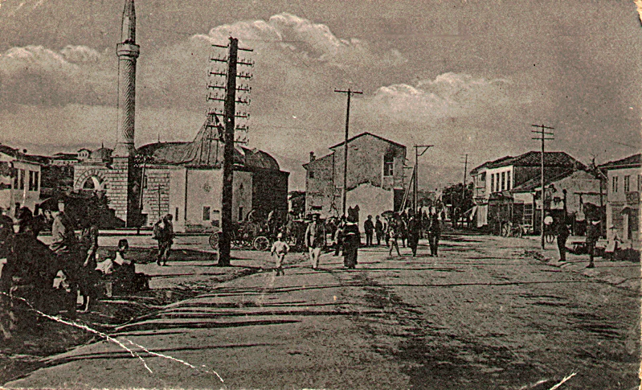
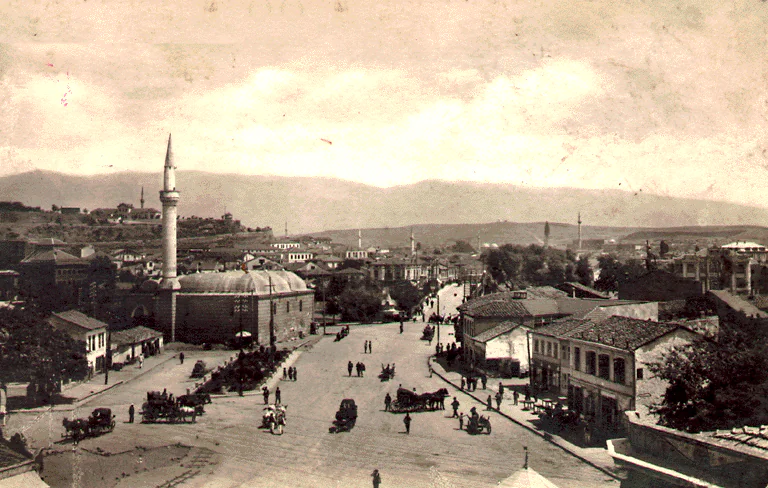
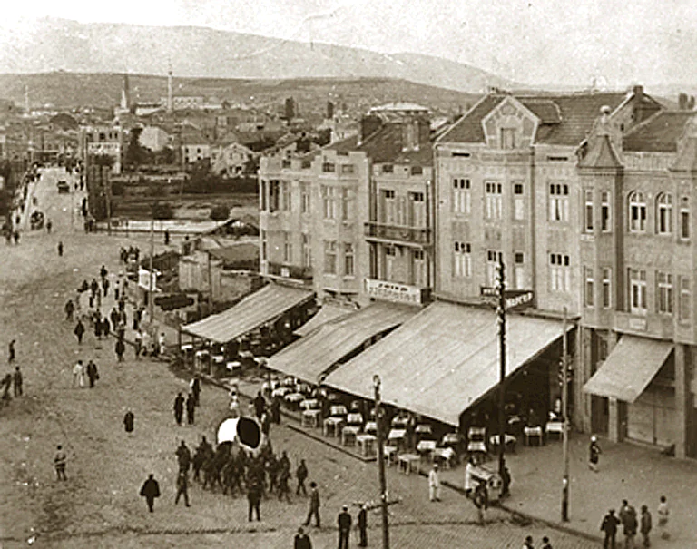

Праздник - площадь
- Сценарий
- Ацо Петровски и Аки Павловски
- Режиссёр
- Трайче Попов
- Оператор
- Киро Билбиловски и Трайче Попов
- Год
- 1949
- Продолжительность
- 00:19

Площадь города Скопье, снятая около середины XIX века.

Скопье в конце XIX века. Площадь с мечетью Бурмали и несколькими зданиями вокруг неё. Неблагоустроенная улица. Место сбора перевозчиков товаров с воловьими упряжками.

Площадь в конце XIX - начале XX века. На переднем плане стоянка фаэтонов и повозок. Справа в два ряда тянутся здания у самого каменного моста. За ними мечеть Бурмали. Слева от неё построены жилые дома, а сразу за ними видна часть банка. На заднем плане возвышается Скопская крепость - Кале с казармой.

Площадь в конце XIX - начале XX века. На переднем плане стоянка фаэтонов и повозок. Справа в два ряда тянутся здания у самого каменного моста, где размещались торговые и ремесленные лавки. Слева от них мечеть Бурмали, а рядом с ней жилые дома. На заднем плане возвышается Скопская крепость - Кале с казармой.

Скопье во время Балканских войн. Мечеть Бурмали со стоянкой фаэтонов. Справа от неё видны здания по обе стороны перед въездом на Каменный мост, где размещались торговые лавки и ремесленники. На переднем плане видны чистильщики обуви и солдаты. Улица устроена с открытыми каналами для дождевой воды.

Часть площади перед Каменным мостом (во время Балканской войны). Видны немощёные улицы. Здание слева - одно из тех, что стояли в два ряда перед Каменным мостом. В них размещались торговые и ремесленные лавки. Около 1920 года их снесли.

Скопье, около 1920 года. Часть городской площади перед Каменным мостом. Первые киоски для услуг и торговли. Киоски отличаются подчёркнутой архитектурой деталей, то есть формой крыш. Мост расширен пешеходными консолями.

Скопье, около 1920 года. Благоустроенная городская площадь с городскими элементами, огороженным зелёным сквером, мощёными площадками и тротуарами с бордюрами. Подчёркнутый подход к Каменному мосту с открытым видом на реку и крепость. Оживление горожан и фаэтонов как общественного транспорта.

Скопье, около 1920 года. Благоустроенная городская площадь с городскими элементами, огороженным зелёным сквером, мощёными площадками и тротуарами с бордюрами. Подчёркнутый подход к Каменному мосту с открытым видом на реку и крепость. Оживление горожан и фаэтонов как общественного транспорта.

Скопье после Первой мировой войны, в начале благоустройства городской площади. Снесены здания позади мечети Бурмали, перед Каменным мостом. На пешеходных консолях моста новые перила. На заднем плане видна часть Пайко-махалы на левом берегу Вардара.

Скопье сразу после Первой мировой войны. Городская площадь до постройки дворца Ристича. Вид на разрозненную застройку традиционной архитектуры. Прямо вверх главная улица, ведущая к тогдашнему вокзалу. Слева, до середины, нынешняя улица «11 Октября».

Скопье, 1920-е. Городская площадь с южной стороны с частью дворца Ристича справа. Слева гостиницы «Сараево», «Обединувание» и кафе «Маргер». Вдоль главной улицы растут здания и торговые лавки.

Площадь, 1920-е. На переднем плане стоянка фаэтонов (перед Офицерским домом), а на заднем плане доминирует дом аптекаря Ристича, в народе называемый дворцом Ристича.

Скопье около 1930 года. Городская площадь с южной стороны с дворцом Ристича и дровяным складом на переднем плане. Вдоль главной улицы растут здания и лавки.

Скопье, около 1930 года. Часть городской площади с дворцом Ристича. Справа виден забор дровяного склада, где продавали стройматериалы.

Аэрофотоснимок площади Македония. (1920-е)

Часть площади с дворцом Ристича (1930-е)

Часть площади и дворец Ристича. Внизу слева крытая эстрада для военного оркестра, игравшего по воскресеньям и праздникам. Справа вдали видна мельница «Балкан». (1930-е)

Скопье около 1930 года. Городская площадь с дворцом Ристича и дровяным складом на переднем плане. Вдоль главной улицы растут здания и торговые лавки.

Скопье около 1930 года. Городская площадь с южной стороны после постройки дворца Ристича, с дровяным складом на переднем плане. Вдоль главной улицы растут здания и лавки.

Скопье около 1930 года. Часть площади с южной стороны после постройки дворца Ристича, с дровяным складом на переднем плане и главной улицей к вокзалу с множеством зданий и лавок.

Часть площади с Офицерским домом на заднем плане
- 1920-е.

Площадь около 1927 года. Южный подход к Каменному мосту. Сзади слева видны Народный театр и Скопская крепость - Кале.

Площадь около 1927 года. Южный подход к Каменному мосту. На переднем плане кинотерраса, где летом показывали фильмы.

Скопье, около 1925 года. Часть городской площади перед Каменным мостом. Первые киоски для услуг и торговли. Киоски отличаются подчёркнутой архитектурой деталей, то есть формой крыш. Мост расширен пешеходными консолями. На заднем плане слева видны Народный театр и Скопская крепость - Кале. На переднем плане сносят кинотеррасу, на месте которой построен Народный банк.

Площадь около 1926 года. Благоустроенная городская площадь с городскими элементами, огороженным зелёным сквером, мощёными площадками и тротуарами с бордюрами. У сквера стоянка фаэтонов, а рядом стоянка для автомобилей и такси. Справа рестораны и гостиницы. Прямо Каменный мост с частью еврейского квартала и Пайко-махалы. В левой части снимка строящийся Офицерский дом.

Площадь, вторая половина 1920-х. Благоустроенная городская площадь с городскими элементами, огороженным зелёным сквером, мощёными площадками и тротуарами с бордюрами. У зелёного сквера была стоянка фаэтонов. Справа рестораны и гостиницы. Слева Офицерский дом, ещё строящийся. На заднем плане Каменный мост с частью еврейского квартала и Пайко-махалы.

Площадь города Скопье - 1920-е. Перед Офицерским домом была стоянка такси. Но и фаэтоны всё ещё служат горожанам транспортом.

Вся площадь - конец 1920-х. Перед Офицерским домом была стоянка такси. Но и фаэтоны всё ещё служат горожанам общественным транспортом.

Площадь с гостиницей «Сараево» и популярным кафе «Маргер», любимым местом скопчан. Слева от гостиницы «Сараево» была гостиница «Обединувание». На переднем плане на тротуаре сидит продавец бубликов. (около 1935 года)

Площадь с гостиницей «Сараево» и популярным кафе «Маргер», которое было любимым местом скопчан. Слева от гостиницы «Сараево» была гостиница «Обединувание». Слева виден южный подход к Каменному мосту - 1920-е.

Площадь с Народным банком, строящейся Хозяйственно-торговой палатой и частью Пайко-махалы с Оттоманским банком. Перед палатой гостиницы и кафе «Маргер» (до их сноса). (1930-е)

Часть площади с памятниками у южного въезда на Каменный мост. - 1930-е

Часть площади в сторону Каменного моста. У въезда на мост на двух высоких мраморных постаментах установлены два всадника (работа скульптора Антуна Августинчича). На площади построен и фонтан. Слева видны Народный театр, Скопская крепость - Кале и часть еврейского квартала. (около 1930 года)

Часть площади с Народным банком и Хозяйственно-торговой палатой. (1930-е)

Площадь города Скопье, 1950-е, со старой почтой на заднем плане, а слева - Естественнонаучный музей.

Площадь, 1950-е. Первое здание слева известно под названием «Мацура». В нём размещались центральная аптека и другие магазины. На заднем плане видны Офицерский дом, Народный банк и Каменный мост. На переднем плане, на месте бывшего дровяного склада, красиво разбитый парк.

Площадь города Скопье, 1950-е, с гостиницей «Македония» слева.

Площадь в 1950-е годы.

Площадь в 1950-е годы.

Часть площади с Офицерским домом, а на заднем плане Народный театр и Скопская крепость - Кале. (1950-е)

Часть площади в сторону Каменного моста. Слева Офицерский дом, справа Народный банк и Хозяйственно-торговая палата. Городской автобусный транспорт (одноэтажные и двухэтажные автобусы) с начальной и конечной остановкой на площади. (1950-е)

Площадь города Скопье около 1950 года. Слева Офицерский дом, справа Народный банк с Хозяйственно-торговой палатой. Между ними Каменный мост, а на другой стороне видны здания банков и Ибни Пайко.

Площадь - 1950-е

Площадь, 1970-е. Вид на Каменный мост, здание «Ибни Пайко» и банковский комплекс. В те годы площадь использовалась как стоянка.

Часть площади, 1970-е, с дворцом Ристича и зданиями на улице «Гоце Делчев».


 Акведук4 открытки
Акведук4 открытки Кале30 открыток
Кале30 открыток Мосты60 открыток
Мосты60 открыток Набережная58 открыток
Набережная58 открыток Площадь46 открыток
Площадь46 открыток Здания66 открыток
Здания66 открыток Христианские храмы19 открыток
Христианские храмы19 открыток Мусульманские здания33 открытки
Мусульманские здания33 открытки Офицерский дом29 открыток
Офицерский дом29 открыток Театр28 открыток
Театр28 открыток Железнодорожный вокзал13 открыток
Железнодорожный вокзал13 открыток Школы36 открыток
Школы36 открыток Парки12 открыток
Парки12 открыток Рынки18 открыток
Рынки18 открыток Улицы38 открыток
Улицы38 открыток Панорама I60 открыток
Панорама I60 открыток Панорама II30 открыток
Панорама II30 открыток Коллажи55 открыток
Коллажи55 открыток Наводнения9 открыток
Наводнения9 открыток Землетрясение27 открыток
Землетрясение27 открыток Скопье 200026 открыток
Скопье 200026 открыток